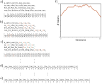
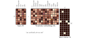
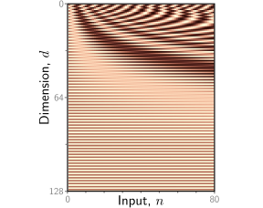
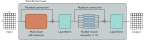

Transformers
Transformers are a type of neural network architecture designed to handle sequential data, such as text, by leveraging self-attention mechanisms to capture dependencies between tokens regardless of their distance in the sequence. They were introduced in the paper Attention is All You Need by Vaswani et al. in 2017.
The paper had the following figure on the overall architecture of the transformer model:

Note that we have have already studied the feed forward layers in the figure and are familiar with Linear and Softmax. The modules from the figure that we have not yet covered include the Multi-Head Attention, the Masked Multi-Head Attention and Add & Norm layers.
Transformers were initially targeted at natural language processing (NLP) problems. The model’s input is a series of high-dimensional embeddings representing words or word fragments aka tokens. Text is split into tokens using a sub-word tokenizer such as BPE (Byte Pair Encoding).
The embeddings of tokens are passed through a series of transformer layers.
Natural language datasets have a unique complication that text sequences vary in length, and unlike images, there is no easy way to resize them.
Tokenization
A text processing pipeline begins with a tokenizer. This splits the text into smaller constituent units (tokens) from a vocabulary of possible tokens. In the discussion above, we have implied that these tokens represent words, but there are several difficulties.
Inevitably, some words (e.g., names) will not be in the vocabulary.
It’s unclear how to handle punctuation, but this is important. If a sentence ends in a question mark, we must encode this information.
The vocabulary would need different tokens for versions of the same word with different suffixes (e.g., walk, walks, walked, walking), and there is no way to clarify that these variations are related.
One approach would be to use letters and punctuation marks as the vocabulary, but this would mean splitting text into very small parts and requiring the subsequent network to re-learn the relations between them.
In practice, a compromise between letters and full words is used, and the final vocabulary includes both common words and word fragments from which larger and less frequent words can be composed. The vocabulary is computed using a sub-word tokenizer such as Byte Pair Encoding (BPE) that greedily merges commonly occurring sub-strings based on their frequency.

Sub-word tokenization.
A passage of text from a nursery rhyme. The tokens are initially just the characters and whitespace (represented by an underscore), and their frequencies are displayed in the table.
At each iteration, the sub-word tokenizer looks for the most commonly occurring adjacent pair of tokens (in this case, se) and merges them. This creates a new token and decreases the counts for the original tokens s and e. Note that the last character of the first token to be merged cannot be whitespace, which prevents merging across words.
At the second iteration, the algorithm merges e and the whitespace character_.
After 23 iterations, the tokens consist of a mix of letters, word fragments, and commonly occurring words.
If we continue this process indefinitely, the tokens eventually represent the full words.
Over time, the number of tokens increases as we add word fragments to the letters and then decreases again as we merge these fragments. In a real situation, there would be a very large number of words, and the algorithm would terminate when the vocabulary size (number of tokens) reached a predetermined value. Punctuation and capital letters would also be treated as separate input characters.
You can visualize how this works using tools like Tiktokenizer (https://tiktokenizer.vercel.app).
For reference, GPT-3 uses 50,257 tokens and GPT-4 uses 100,277 tokens in its vocabulary.
Embeddings
Each token in the vocabulary \(\mathcal{V}\) is mapped to a unique word embedding, and the embeddings for the whole vocabulary are stored in a matrix \(\Omega_e \in \mathbb{R}^{D \times |\mathcal{V}|}\).
To accomplish this, the \(N\) input tokens are first encoded in the matrix \(T \in \mathbb{R}^{|\mathcal{V}| \times N}\), where the nth column corresponds to the nth token and is a |V|×1 one-hot vector (i.e., a vector where every entry is zero except for the entry corresponding to the token, which is set to one). The input embeddings are computed as \(X= \Omega_e T\), and \(\Omega_e\) is learned like any other network parameter. A typical embedding size D is 1024, and a typical total vocabulary size \(|\mathcal{V}|\) is 30,000, so even before the main network, there are many parameters in \(\Omega_e\) to learn.

The input embedding matrix \(\mathbf{X} \in \mathbb{R}^{D \times N}\) contains N embeddings of length D and is created by multiplying a matrix \(\mathbf{\Omega_e}\) containing the embeddings that correspond to the word or sub-word indices. The vocabulary matrix \(\mathbf{\Omega_e}\) is considered a parameter of the model and is learned along with the other parameters. Note that the two embeddings for the word an in \(\mathbf{X}\) are the same.
Positional encoding
Representing each input \(\mathbf{x}_n\) by its content alone does not explicitly encode its position in a sequence. For language, however, order is important. The sentence
The woman ate the raccoon.
has a different meaning from
The raccoon ate the woman.
Positional encodings provide information about where inputs occur in a sequence. There are two main approaches: absolute positional encodings and relative positional encodings.

Positional encodings. A positional encoding matrix \(\Pi\) can be added to the data matrix \(\mathbf{X}\) to give each input information about its position. Each column of \(\Pi\) represents a different position. In this example, the encodings follow a predefined sinusoidal pattern:
Absolute positional encodings
Absolute positional encodings identify each input’s position in the sequence. A matrix \(\Pi\) with the same dimensions as \(\mathbf{X}\) is added to the input representations:
\[ \widetilde{\mathbf{X}} = \mathbf{X} + \Pi. \]
\[ \Pi_{d,n} = \begin{cases} \sin\left(\frac{n}{10000^{d/D}}\right) & \text{if } d \text{ is even}, \\ \cos\left(\frac{n}{10000^{(d-1)/D}}\right) & \text{if } d \text{ is odd}, \end{cases} \]
where \(n\) indexes positions, \(d=0,\ldots,D-1\) indexes features, and \(D\) is the encoding dimension. This formula can generate encodings for additional positions if needed. Alternatively, positional encodings can be learned during training.
Each column of \(\Pi\) provides a distinct vector for the corresponding position. Thus, the representation of a word depends on both its content and its location in the sequence.
The positional vectors can be predefined, as in the sinusoidal construction above, or learned during training. They can be introduced at the network input or incorporated at multiple layers.
Relative positional encodings
Relative positional encodings describe where one input occurs in relation to another. For example, the relationship “two words before” remains the same whether the words appear near the beginning or the end of a sentence.
For inputs at positions \(a\) and \(b\), their relative position can be represented by the signed offset
\[ r = a-b. \]
The sign indicates whether position \(a\) comes before or after position \(b\), and the magnitude indicates the distance between them.
Although this offset can be computed from absolute positions, relative positional encodings represent it directly. One approach assigns a learned parameter or vector \(\pi_r\) to each offset \(r\). The network uses this encoding when combining information from the two positions. Pairs of inputs with the same offset share the same relative positional encoding, regardless of their absolute locations.
Types of Transformers
Finally, the embedding matrix X representing the text is passed through a series of K transformer layers, called a transformer model. There are three types of transformer models:
Encoder: An encoder transforms the text embeddings into a representation that can support a variety of tasks.
Decoder: A decoder predicts the next token to continue the input text.
Encoder-decoder: Encoder-decoders are used in sequence-to-sequence tasks, where one text string is converted into another (e.g., machine translation).
| Architecture | Attention pattern | Example task |
|---|---|---|
| Encoder-only | Usually bidirectional self-attention | Classification or masked-token prediction |
| Decoder-only | Causal self-attention | Text generation |
| Encoder–decoder | Encoder self-attention, causal decoder self-attention, and cross-attention | Translation |
Layer Normalization (LayerNorm)
Suppose a token has a four-dimensional embedding:
\[ x=[2,4,6,8] \]
Its mean is:
\[ \mu=\frac{2+4+6+8}{4}=5 \]
Its standard deviation is:
\[ \sigma=\sqrt{\frac{(2-5)^2+(4-5)^2+(6-5)^2+(8-5)^2}{4}}=\sqrt{5} \]
LayerNorm first standardizes the vector:
\[ \hat{x}=\frac{x-\mu}{\sqrt{\sigma^2+\epsilon}} \]
Ignoring the tiny \(\) for simplicity:
\[ \hat{x}\approx[-1.34,-0.45,0.45,1.34] \]
Now the vector has approximately:
- Mean = 0
- Standard deviation = 1
But LayerNorm doesn’t stop there. It also learns a scale and shift for each dimension:
\[ \boxed{y=\gamma\odot\hat{x}+\beta} \]
Here, \(\gamma\) and \(\beta\) are learnable parameters, each with four elements in this example. They allow the network to adjust the standardized representation.
What exactly gets normalized in a transformer?
Suppose the input has shape:
\[ (\text{batch},\text{tokens},\text{embedding dimensions}) =(32,64,128) \]
LayerNorm normalizes each token’s 128-dimensional vector independently.
LayerNorm operates across embedding dimensions
Each row is normalized separately. The same learned γ and β parameters are shared across token positions.
This is different from Batch Normalization, which uses statistics across examples in a batch.
Where does LayerNorm appear in our transformer?
Recall our implementation:
attention_output = self.attention(x)
x = self.norm1(x + attention_output)
ff_output = self.feedforward(x)
x = self.norm2(x + ff_output)The first LayerNorm normalizes the result of the attention block plus its residual connection.
The second normalizes the result of the feed-forward block plus its residual connection.
This is called a Post-LayerNorm transformer, because normalization happens after each residual addition. Many modern transformer architectures instead use Pre-LayerNorm, which normalizes before each sublayer.
PyTorch implementation
import torch
import torch.nn as nn
x = torch.tensor([[2., 4., 6., 8.]])
norm = nn.LayerNorm(4)
y = norm(x)
print(y)The important detail is that nn.LayerNorm(4) creates 8 learnable parameters:
- Four scale parameters (\(\))
- Four shift parameters (\(\))
For our transformer with d_model=128, each LayerNorm has 256 learnable parameters.
Why do we need it?
During training, the outputs of attention and feed-forward layers can change in magnitude as their parameters are updated. LayerNorm helps keep the scale of representations more controlled, making optimization more stable.
It also helps gradients propagate through deep transformer networks.
One important distinction: LayerNorm does not make all token embeddings identical or erase their contextual information. It normalizes each vector’s mean and variance, while preserving differences in the relative values of its dimensions.
In short, self-attention determines what information each token receives; LayerNorm helps keep the resulting representations numerically well-behaved.
Residual connections
Residual connections are a key component of transformer layers. They allow the network to retain information from earlier layers by adding the input of a layer to its output. This helps mitigate the vanishing gradient problem and enables the training of very deep networks.
Mathematically, if a layer implements a function \(F(\mathbf{X})\), the residual connection produces an output \(\mathbf{X} + F(\mathbf{X})\). In transformers, both the multi-head self-attention and the feed-forward sub-layers use residual connections.
Transformer layers
Self-attention is just one part of a larger transformer layer. This consists of a multi- head self-attention unit (which allows the word representations to interact with each other) followed by a fully connected network \(\textbf{mlp}[\mathbf{x}_\bullet]\) (that operates separately on each word). Both units are residual networks (i.e., their output is added back to the original input). In addition, it is typical to add a LayerNorm operation after both the self- attention and fully connected networks. This is similar to BatchNorm but normalizes each embedding in each batch element separately using statistics calculated across its D embedding dimensions (section 11.4 and figure 11.14). The complete layer can be described by the following series of operations (figure 12.7):

Transformer layer. The input consists of a D × N matrix containing the D-dimensional word embeddings for each of the N input tokens. The output is a matrix of the same size. The transformer layer consists of a series of operations. First, there is a multi-head attention block, allowing the word embeddings to interact with one another. This forms the processing of a residual block, so the inputs are added back to the output. Second, a LayerNorm operation is applied separately to each embedding. Third, there is a second residual layer where the same fully connected neural network is applied separately to each of the N word representations (columns). Finally, LayerNorm is applied again.
\[\begin{eqnarray} \mathbf{X} &\leftarrow& \mathbf{X} + \mbox{\bf{MhSa}}[\mathbf{X}] \nonumber \\ \mathbf{X} &\leftarrow& \mbox{\bf{LayerNorm}}[\mathbf{X}] \hspace{3cm}\nonumber\\ \mathbf{x}_{n} &\leftarrow& \mathbf{x}_{n}+\mbox{\bf{mlp}}[\mathbf{x}_{n}] \hspace{3.6cm}\forall\; n\in\{1,\ldots, N\}\nonumber\\ \mathbf{X} &\leftarrow& \mbox{\bf{LayerNorm}}[\mathbf{X}], \end{eqnarray}\]
where the column vectors xn are separately taken from the full data matrix X. In a real network, the data passes through a series of these transformer layers.